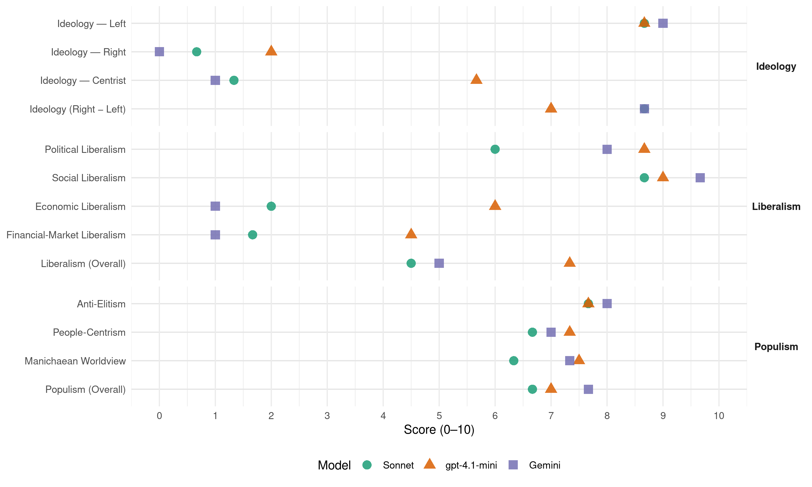

(Netherlands, 2021)
manifesto_id 22240_202103
Get full text: This site shows derived annotations and short verbatim quotes only. The full manifesto text is © Manifesto Project / WZB — obtain it via manifesto-project.wzb.eu using the manifesto_id above.
Headline scores
| Dimension | Sonnet | gpt-4.1-mini | Gemini |
|---|---|---|---|
| Populism (Overall) | 6.7 | 7.0 | 7.7 |
| Anti-Elitism | 7.7 | 7.7 | 8.0 |
| People-Centrism | 6.7 | 7.3 | 7.0 |
| Manichaean Worldview | 6.3 | 7.5 | 7.3 |
| Ideology (Right − Left) | 8.7 | 7.0 | 8.7 |
| Liberalism (Overall) | 4.5 | 7.3 | 5.0 |
| Political Liberalism | 6.0 | 8.7 | 8.0 |
| Social Liberalism | 8.7 | 9.0 | 9.7 |
| Economic Liberalism | 2.0 | 6.0 | 1.0 |
| Financial-Market Liberalism | 1.7 | 4.5 | 1.0 |
Evidence per dimension
Economic Liberalism
Gemini · score 1.0 · verified · chunk 1
“Weg met de dictatuur van de ‘vrije’ markt”
Weg met de dictatuur van de ‘vrije’ markt Waar de zogenaamde ‘vrije’ markt
Gemini · score 1.0 · verified · chunk 2
“kapitalistische marktwerking”
en minder beïnvloedbaar is door kapitalistische marktwerking.
Gemini · score 1.0 · verified · chunk 3
“ongelijke verdeling van welvaart inherent is aan het kapitalistische systeem”
Om werkelijk wat aan armoede te doen moeten we onder ogen zien dat de ongelijke verdeling van welvaart inherent is aan het kapitalistische systeem.
gpt-4.1-mini · score 3.0 · verified · chunk 1
“Van een markteconomie naar een economie voor iedereen”
Van een markteconomie naar een economie voor iedereen Produceren naar vermogen, nemen naar behoefte Einde aan de schuldeneconomie Een circulaire en toekomstbestendige economie Internationale rechtvaardigheid
gpt-4.1-mini · score 8.0 · verified · chunk 2
“We streven naar het op Europees niveau verhogen van belastingen voor multinationals en vermogenden”
We streven naar het op Europees niveau verhogen van belastingen voor multinationals en vermogenden, en zetten breder in op het opsporen van kapitaalvlucht en belastingfraude en -ontduiking.
gpt-4.1-mini · score 7.0 · verified · chunk 3
“We zeggen niet dat hulpverlening slecht is, we zeggen wel dat die geen verandering brengt in de productie van armoede”
We zeggen niet dat hulpverlening slecht is, we zeggen wel dat die geen verandering brengt in de productie van armoede. Om werkelijk wat aan armoede te doen moeten we onder ogen zien dat de ongelijke verdeling van welvaart inherent is aan het kapitalistische systeem.
Sonnet · score 1.0 · verified · chunk 1
“Van een markteconomie naar een economie voor iedereen”
VAN EEN MARKTECONOMIE NAAR EEN ECONOMIE VOOR IEDEREEN 1 We brengen belangrijke sectoren van de economie, zoals banken, pensioenfondsen, het openbaar vervoer, de zorg en andere basisindustrieën in publieke handen.
Sonnet · score 2.0 · verified · chunk 2
“systeem van marktwerking met economische groei”
Ecosystemen en biodiversiteit worden op grote schaal vernietigd door het systeem van marktwerking met economische groei als belangrijkste doel.
Sonnet · score 3.0 · verified · chunk 3
“Marktwerking in het hoger onderwijs moet tegengegaan worden”
Marktwerking in het hoger onderwijs moet tegengegaan worden. De arbeidsmarkt dient geweerd te worden van (semi-) openbare instellingen
Financial-Market Liberalism
Gemini · score 1.0 · verified · chunk 1
“banken, pensioenfondsen… in publieke handen”
belangrijke sectoren van de economie, zoals banken, pensioenfondsen, het openbaar vervoer, de zorg en andere basisindustrieën in publieke handen.
Gemini · score 1.0 · verified · chunk 2
“private als publieke financiële instellingen”
De financiering van ontbossing, landroof en productie van fossiele brandstoffen wordt voor zowel private als publieke financiële instellingen onmogelijk.
Gemini · score 1.0 · verified · chunk 3
“lucratieve financiële transacties”
Wordt dat niet geïnvesteerd in productie in het eigen land, maar, wat in toenemende mate het geval is, in meer lucratieve financiële transacties, of in ‘lage lonen landen’
gpt-4.1-mini · score 2.0 · verified · chunk 1
“Nederland als belastingparadijs wordt onmogelijk gemaakt”
Nederland als belastingparadijs wordt onmogelijk gemaakt. Ook wordt onmogelijk gemaakt dat bedrijven in Nederland gebruik maken van vluchtroutes om hun belasting te ontwijken.
gpt-4.1-mini · score 7.0 · verified · chunk 2
“We bestrijden belastingontduiking en fraude door de allerrijksten”
Belastingontduiking en fraude door de allerrijksten moet worden opgespoord en gestopt. We investeren in opsporingsteams en brengen de misdadigers voor de rechter.
Sonnet · score 1.0 · verified · chunk 1
“banken, pensioenfondsen”
We brengen belangrijke sectoren van de economie, zoals banken, pensioenfondsen, het openbaar vervoer, de zorg en andere basisindustrieën in publieke handen.
Sonnet · score 2.0 · verified · chunk 2
“kapitaalvlucht en belastingfraude en -ontduiking”
zetten breder in op het opsporen van kapitaalvlucht en belastingfraude en -ontduiking.
Sonnet · score 2.0 · verified · chunk 3
“meer lucratieve financiële transacties”
niet geïnvesteerd in productie in het eigen land, maar, wat in toenemende mate het geval is, in meer lucratieve financiële transacties, of in ‘lage lonen landen’
Political Liberalism
Gemini · score 8.0 · verified · chunk 1
“waarden van vrijheid en democratie beschermen”
We moeten met elkaar de waarden van vrijheid en democratie beschermen en hooghouden. Alleen op deze manier
Gemini · score 8.0 · verified · chunk 2
“radicale democratisering van de EU”
We streven naar radicale democratisering van de EU. De transparantie van de Raad
Gemini · score 8.0 · verified · chunk 3
“binnen de normen van wat we onder democratie verstaan”
Onze stellingname daarbij blijft geheel binnen de grenzen van de wet, binnen de normen van wat we onder democratie verstaan - zie artikel 1 van onze Grondwet
gpt-4.1-mini · score 9.0 · verified · chunk 1
“We moeten met elkaar de waarden van vrijheid en democratie beschermen en hooghouden.”
We moeten met elkaar de waarden van vrijheid en democratie beschermen en hooghouden. Alleen op deze manier kunnen we met elkaar bouwen aan een eerlijke en voor iedereen veilige samenleving.
gpt-4.1-mini · score 9.0 · verified · chunk 2
“De rechtsstaat wordt beschermd en landen moeten elkaar aanspreken op schendingen van mensenrechten”
In alle EU-landen moet de rechtsstaat worden beschermd en landen moeten elkaar aanspreken op schendingen van mensenrechten, zelfbeschikking en vrijheid van meningsuiting. De bestaande mensenrechteninstrumenten moeten verbeterd worden en actief worden ingezet om misstanden binnen de EU aan te kaarten en daar gevolgen aan te verbinden.
gpt-4.1-mini · score 8.0 · verified · chunk 3
“De overheid heeft de plicht om alle Nederlanders te beschermen en gelijk te behandelen”
De Nederlandse overheid heeft de plicht om alle Nederlanders te beschermen en gelijk te behandelen. Op dit moment is dat niet het geval.
Sonnet · score 6.0 · verified · chunk 1
“Een gezonde en directe democratie”
16 STAATSINRICHTING EN RECHTSSTAAT Een rechtsstaat voor iedereen Een vrije en veilige rechtsstaat Een gezonde en directe democratie
Sonnet · score 5.0 · mixed · chunk 2
“radicale democratisering van de Europese Unie”
Daarom pleiten we voor radicale democratisering van de Europese Unie (EU). De inspraak van Europese burgers moet makkelijker
Sonnet · score 6.0 · verified · chunk 3
“binnen de normen van wat we onder democratie verstaan”
Onze stellingname daarbij blijft geheel binnen de grenzen van de wet, binnen de normen van wat we onder democratie verstaan - zie artikel 1 van onze Grondwet
Liberalism (Overall)
Gemini · score 5.0 · verified · chunk 1
“waarden van vrijheid en democratie beschermen”
We moeten met elkaar de waarden van vrijheid en democratie beschermen en hooghouden. Alleen op deze manier
Gemini · score 5.0 · verified · chunk 2
“radicale democratisering van de EU”
We streven naar radicale democratisering van de EU. De transparantie van de Raad
Gemini · score 5.0 · verified · chunk 3
“binnen de normen van wat we onder democratie verstaan”
Onze stellingname daarbij blijft geheel binnen de grenzen van de wet, binnen de normen van wat we onder democratie verstaan - zie artikel 1 van onze Grondwet
gpt-4.1-mini · score 6.0 · verified · chunk 1
“We moeten met elkaar de waarden van vrijheid en democratie beschermen en hooghouden.”
We moeten met elkaar de waarden van vrijheid en democratie beschermen en hooghouden. Alleen op deze manier kunnen we met elkaar bouwen aan een eerlijke en voor iedereen veilige samenleving.
gpt-4.1-mini · score 8.0 · verified · chunk 2
“De rechtsstaat wordt beschermd en landen moeten elkaar aanspreken op schendingen van mensenrechten”
In alle EU-landen moet de rechtsstaat worden beschermd en landen moeten elkaar aanspreken op schendingen van mensenrechten, zelfbeschikking en vrijheid van meningsuiting. De bestaande mensenrechteninstrumenten moeten verbeterd worden en actief worden ingezet om misstanden binnen de EU aan te kaarten en daar gevolgen aan te verbinden.
gpt-4.1-mini · score 8.0 · verified · chunk 3
“De overheid heeft de plicht om alle Nederlanders te beschermen en gelijk te behandelen”
De Nederlandse overheid heeft de plicht om alle Nederlanders te beschermen en gelijk te behandelen. Op dit moment is dat niet het geval.
Sonnet · score 4.0 · verified · chunk 1
“radicale gelijkwaardigheid en economische rechtvaardigheid”
De grondbeginselen van BIJ1 zijn radicale gelijkwaardigheid en economische rechtvaardigheid.
Sonnet · score 4.0 · mixed · chunk 2
“onafhankelijkheid van journalisten moet worden beschermd”
De onafhankelijkheid van journalisten moet worden beschermd. Dat betekent dat we intimidatie, opsluiting en tracking van journalisten door OM en veiligheidsdiensten bestrijden.
Sonnet · score 5.0 · verified · chunk 3
“structurele herverdeling van de welvaart”
Werkelijke armoedebestrijding vereist structurele herverdeling van de welvaart. Daar is in Nederland geen sprake van.
Anti-Elitism
Gemini · score 8.0 · verified · chunk 1
“scheuren in de oude machtsstructuren”
wereldwijd de scheuren in de oude machtsstructuren verder openbreken De barsten zijn al
Gemini · score 8.0 · verified · chunk 2
“invloed van verwoestende multinationals”
en de invloed van verwoestende multinationals moet tot een minimum beperkt worden.
Gemini · score 8.0 · verified · chunk 3
“vooral de rijke bovenlaag het meeste profiteert”
hoe de verworven welvaart wordt verdeeld. Het is duidelijk dat vooral de rijke bovenlaag het meeste profiteert. In Nederland heeft de rijkste 1% van
gpt-4.1-mini · score 8.0 · verified · chunk 1
“de macht van grote bedrijven is een bedreiging voor de democratie”
De macht van grote bedrijven is een bedreiging voor de democratie, bestaanszekerheid is er niet voor iedereen en wereldwijd worden vele mensen uitgebuit zodat enkelen in welvaart kunnen leven.
gpt-4.1-mini · score 8.0 · verified · chunk 2
“de belangen van het grootkapitaal dient”
De EU mag niet dienen als liberaal en racistisch instituut dat de belangen van het grootkapitaal dient. Ondoorzichtig en anti-democratisch Een probleem van de EU in haar huidige vorm is dat het bestuur ervan, met name als het gaat om de rol van nationale regeringen vertegenwoordigd binnen de Raad van Ministers, ondoorzichtig te werk gaat en burgers het nakijken hebben.
gpt-4.1-mini · score 7.0 · verified · chunk 3
“de rijke bovenlaag het meeste profiteert”
Het is duidelijk dat vooral de rijke bovenlaag het meeste profiteert. In Nederland heeft de rijkste 1% van de bevolking meer dan een kwart van het totale vermogen in bezit.
Sonnet · score 8.0 · verified · chunk 1
“dictatuur van de ‘vrije’ markt”
Weg met de dictatuur van de ‘vrije’ markt Waar de zogenaamde ‘vrije’ markt spreekt over vrijheid, is het in feite een dictatuur die werkende mensen uitbuit.
Sonnet · score 8.0 · verified · chunk 2
“belangen van het grootkapitaal dient”
De EU mag niet dienen als liberaal en racistisch instituut dat de belangen van het grootkapitaal dient.
Sonnet · score 7.0 · verified · chunk 3
“de rijke bovenlaag het meeste profiteert”
Het is duidelijk dat vooral de rijke bovenlaag het meeste profiteert. In Nederland heeft de rijkste 1% van de bevolking meer dan een kwart
Ideology — Centrist
Gemini · score 2.0 · verified · chunk 2
“Unie van volkeren en burgers”
niet de ‘Unie van volkeren en burgers‘ die het zou moeten zijn.
Gemini · score 0.0 · verified · chunk 3
“door het marxisme geïnspireerde systeem-kritiek”
De belangrijke bijdrage die het feminisme biedt aan de door het marxisme geïnspireerde systeem-kritiek, is dat het kapitalisme net zo afhankelijk is
gpt-4.1-mini · score 7.0 · verified · chunk 1
“Een stem op BIJ1 is een stem op nieuwe politiek, waar we met elkaar in al onze diversiteit invulling aan geven.”
Een stem op BIJ1 is een stem voor nieuwe politiek, waar we met elkaar in al onze diversiteit invulling aan geven. Een stem op BIJ1 is kleur bekennen.
gpt-4.1-mini · score 6.0 · verified · chunk 2
“De inspraak van Europese burgers moet makkelijker en toegankelijker worden gemaakt”
BIJ1 staat voor een rechtvaardig, gelijkwaardig en solidair Europa. Daarom pleiten we voor radicale democratisering van de Europese Unie (EU). De inspraak van Europese burgers moet makkelijker en toegankelijker worden gemaakt en de invloed van verwoestende multinationals moet tot een minimum beperkt worden.
gpt-4.1-mini · score 4.0 · verified · chunk 3
“We gaan ervan uit dat Israël een werkelijk democratische staat kan worden”
We gaan ervan uit dat Israël een werkelijk democratische staat kan worden, met gelijke burgerrechten voor alle inwoners ongeacht etniciteit of religie, dat de bezetting moet worden opgeheven en het internationaal recht moet worden geëerbiedigd.
Sonnet · score 1.0 · verified · chunk 1
“een stem voor nieuwe politiek”
Een stem op BIJ1 is een stem voor nieuwe politiek, waar we met elkaar in al onze diversiteit invulling aan geven.
Sonnet · score 1.0 · verified · chunk 2
“radicale gelijkwaardigheid en economische rechtvaardigheid”
De grondbeginselen van BIJ1 zijn radicale gelijkwaardigheid en economische rechtvaardigheid.
Sonnet · score 2.0 · verified · chunk 3
“radicale gelijkwaardigheid en economische rechtvaardigheid”
©2020 BIJ1 CONTACT INFO@BIJ1.ORG RADICALE GELIJKWAARDIGHEID EN ECONOMISCHE RECHTVAARDIGHEID
Ideology — Left
Gemini · score 9.0 · verified · chunk 1
“nachtmerrie van het kapitalisme”
werkelijkheid kan worden, omdat we al generaties lang in de nachtmerrie van het kapitalisme leven. Een systeem dat drijft
Gemini · score 9.0 · verified · chunk 2
“belangen van het grootkapitaal”
De EU mag niet dienen als liberaal en racistisch instituut dat de belangen van het grootkapitaal dient.
Gemini · score 9.0 · verified · chunk 3
“door het marxisme geïnspireerde systeem-kritiek”
De belangrijke bijdrage die het feminisme biedt aan de door het marxisme geïnspireerde systeem-kritiek, is dat het kapitalisme net zo afhankelijk is
gpt-4.1-mini · score 9.0 · verified · chunk 1
“Van een markteconomie naar een economie voor iedereen”
Van een markteconomie naar een economie voor iedereen Produceren naar vermogen, nemen naar behoefte Einde aan de schuldeneconomie Een circulaire en toekomstbestendige economie Internationale rechtvaardigheid
gpt-4.1-mini · score 9.0 · verified · chunk 2
“We investeren niet verder in de politie. Het geld dat daarmee vrijkomt investeren we in goede collectieve voorzieningen.”
We steken geld in goede collectieve voorzieningen en bevorderen gelijke kansen in de samenleving. We zorgen voor gelijke toegang tot onderwijs, een leefbaar inkomen en aanpak van maatschappijbreed racisme. We investeren niet verder in de politie. Het geld dat daarmee vrijkomt investeren we in goede collectieve voorzieningen.
gpt-4.1-mini · score 8.0 · verified · chunk 3
“We zeggen niet dat hulpverlening slecht is, we zeggen wel dat die geen verandering brengt in de productie van armoede”
We zeggen niet dat hulpverlening slecht is, we zeggen wel dat die geen verandering brengt in de productie van armoede. Om werkelijk wat aan armoede te doen moeten we onder ogen zien dat de ongelijke verdeling van welvaart inherent is aan het kapitalistische systeem.
Sonnet · score 9.0 · verified · chunk 1
“anti-imperialistische strijd”
Vandaar gaat de strijd tegen racisme en voor dekolonisatie dan ook hand in hand met de anti-imperialistische strijd.
Sonnet · score 9.0 · verified · chunk 2
“antikapitalistisch zijn en allianties sluiten”
ons feminisme voor de 99% alleen verwezenlijken kunnen wanneer we ook antikapitalistisch zijn en allianties sluiten met systeemkritische organisaties
Sonnet · score 8.0 · verified · chunk 3
“antikapitalistische bewegingen”
Dat betekent, voor de antikapitalistische bewegingen, dat we ons niet alleen kunnen bezighouden met betere arbeidsomstandigheden
Ideology (Right − Left)
Gemini · score 8.0 · verified · chunk 1
“nachtmerrie van het kapitalisme”
werkelijkheid kan worden, omdat we al generaties lang in de nachtmerrie van het kapitalisme leven. Een systeem dat drijft
Gemini · score 9.0 · verified · chunk 2
“belangen van het grootkapitaal”
De EU mag niet dienen als liberaal en racistisch instituut dat de belangen van het grootkapitaal dient.
Gemini · score 9.0 · verified · chunk 3
“door het marxisme geïnspireerde systeem-kritiek”
De belangrijke bijdrage die het feminisme biedt aan de door het marxisme geïnspireerde systeem-kritiek, is dat het kapitalisme net zo afhankelijk is
gpt-4.1-mini · score 8.0 · verified · chunk 1
“Van een markteconomie naar een economie voor iedereen”
Van een markteconomie naar een economie voor iedereen Produceren naar vermogen, nemen naar behoefte Einde aan de schuldeneconomie Een circulaire en toekomstbestendige economie Internationale rechtvaardigheid
gpt-4.1-mini · score 7.0 · verified · chunk 2
“De EU mag niet dienen als liberaal en racistisch instituut dat de belangen van het grootkapitaal dient”
De EU mag niet dienen als liberaal en racistisch instituut dat de belangen van het grootkapitaal dient. Ondoorzichtig en anti-democratisch Een probleem van de EU in haar huidige vorm is dat het bestuur ervan, met name als het gaat om de rol van nationale regeringen vertegenwoordigd binnen de Raad van Ministers, ondoorzichtig te werk gaat en burgers het nakijken hebben.
gpt-4.1-mini · score 6.0 · verified · chunk 3
“We zeggen niet dat hulpverlening slecht is, we zeggen wel dat die geen verandering brengt in de productie van armoede”
We zeggen niet dat hulpverlening slecht is, we zeggen wel dat die geen verandering brengt in de productie van armoede. Om werkelijk wat aan armoede te doen moeten we onder ogen zien dat de ongelijke verdeling van welvaart inherent is aan het kapitalistische systeem.
Sonnet · score 9.0 · verified · chunk 1
“radicale gelijkwaardigheid en economische rechtvaardigheid”
De strijd voor radicale gelijkwaardigheid en economische rechtvaardigheid kunnen we niet alleen voeren.
Sonnet · score 9.0 · verified · chunk 2
“Dit kapitalistische systeem per definitie onrechtvaardig”
Het uitgangspunt is dat dit kapitalistische systeem per definitie onrechtvaardig is, en nooit alle vrouwen een rechtvaardige gelijkheid kan bieden.
Sonnet · score 8.0 · verified · chunk 3
“het kapitalisme net zo afhankelijk is van de mensen”
is dat het kapitalisme net zo afhankelijk is van de mensen die de goederen en diensten produceren waar winst op te maken valt
Ideology — Right
Gemini · score 0.0 · verified · chunk 1
“tegen racisme, imperialisme en LHBTQI+ haat”
voor zelfbeschikking van volkeren en tegen racisme, imperialisme en LHBTQI+ haat. Een stem op BIJ1 is
Gemini · score 0.0 · verified · chunk 2
“grenzen voor alle landen”
Nederland opent de grenzen voor alle landen en maakt zich binnen de Europese Unie hard
Gemini · score 0.0 · verified · chunk 3
“jarenlange hetze tegen moslims door politiek (extreem-)rechts”
Er heerst in Nederland, net als in veel andere delen van de wereld, een klimaat van islamofobie. Een jarenlange hetze tegen moslims door politiek (extreem-)rechts heeft moslimhaat inmiddels genormaliseerd.
gpt-4.1-mini · score 2.0 · verified · chunk 2
“De EU mag niet dienen als liberaal en racistisch instituut”
De EU mag niet dienen als liberaal en racistisch instituut dat de belangen van het grootkapitaal dient. Ondoorzichtig en anti-democratisch Een probleem van de EU in haar huidige vorm is dat het bestuur ervan, met name als het gaat om de rol van nationale regeringen vertegenwoordigd binnen de Raad van Ministers, ondoorzichtig te werk gaat en burgers het nakijken hebben.
gpt-4.1-mini · score 2.0 · verified · chunk 3
“We wijzen het ook volledig af dat onze kritiek op de staat Israël neer zou komen op een nieuwe vorm van antisemitisme”
We wijzen het ook volledig af dat onze kritiek op de staat Israël neer zou komen op een nieuwe vorm van antisemitisme. De Israël-lobby in Nederland probeert al jaren eenieder die bijvoorbeeld achter de BDS-beweging staat weg te zetten als antisemieten.
Sonnet · score 0.0 · verified · chunk 1
“Open grenzen voor mensen, niet voor kapitaal”
Open grenzen voor mensen, niet voor kapitaal: we gaan kapitaalvlucht tegen. In internationaal verband investeren we in het opsporen en vervolgen van belastingontduikers.
Sonnet · score 1.0 · verified · chunk 2
“vrijheid om te reizen is een universeel mensenrecht”
De vrijheid om te reizen is een universeel mensenrecht. BIJ1 staat voor een wereld waarin dit recht beschermd en gestimuleerd wordt.
Sonnet · score 1.0 · verified · chunk 3
“migranten en vluchtelingen zijn het niet alleen vrouwen”
Waar we te maken hebben met migranten en vluchtelingen zijn het niet alleen vrouwen die onze steun verdienen.
Manichaean Worldview
Gemini · score 6.0 · verified · chunk 1
“nachtmerrie van het kapitalisme”
werkelijkheid kan worden, omdat we al generaties lang in de nachtmerrie van het kapitalisme leven. Een systeem dat drijft
Gemini · score 8.0 · verified · chunk 2
“een liberaal en racistisch instituut”
De EU mag niet dienen als liberaal en racistisch instituut dat de belangen van het grootkapitaal dient.
Gemini · score 8.0 · verified · chunk 3
“opbrengst van hun werk verdwijnt in de zakken van de rijken”
werkende mensen niet alleen werken om zelf in leven te blijven, maar zonder daar zeggenschap over te hebben zien hoe de opbrengst van hun werk verdwijnt in de zakken van de rijken, de aandeelhouders en de multinationals.
gpt-4.1-mini · score 8.0 · verified · chunk 1
“Het kapitalistische systeem van (internationale) ongelijkwaardigheid, uitbuiting en onderdrukking maakt nog steeds gebruik van racisme”
Het kapitalistische systeem van (internationale) ongelijkwaardigheid, uitbuiting en onderdrukking maakt nog steeds gebruik van racisme en een genormaliseerd koloniaal denkbeeld.
gpt-4.1-mini · score 7.0 · verified · chunk 2
“multinationals dragen vaak bij aan vervuiling, mensenrechtenschending”
Deze multinationals hoeven alleen rekenschap af te leggen aan hun aandeelhouders en hebben dus vrij spel in de politiek waar zij dat niet zouden moeten hebben. Ze zijn immers geen politieke partij. Deze multinationals dragen vaak bij aan vervuiling, mensenrechtenschending en discriminatie.
gpt-4.1-mini · score 5.0 · mixed · chunk 3
“We leven in toenemende mate in een harteloos neoliberaal klimaat”
We leven in toenemende mate in een harteloos neoliberaal klimaat, waarin ‘je eigen broek ophouden’ de toetssteen is geworden om mensen op te waarderen, of af te wijzen.
Sonnet · score 6.0 · verified · chunk 1
“scheuren in de oude machtsstructuren”
Op dit moment zien we wereldwijd de scheuren in de oude machtsstructuren verder openbreken. De barsten zijn al zichtbaar en het is aan ons die barsten open te trekken.
Sonnet · score 7.0 · verified · chunk 2
“radicale systeemverandering”
De enige mogelijkheid om tot een oplossing te komen, is radicale systeemverandering.
Sonnet · score 6.0 · verified · chunk 3
“inherent is aan het kapitalistische systeem”
dat de ongelijke verdeling van welvaart inherent is aan het kapitalistische systeem. Het zijn de rijken die kunnen beslissen
People-Centrism
Gemini · score 7.0 · verified · chunk 1
“geschreven door de mensen om wie het gaat”
trots op dit verkiezingsprogramma. Het is geschreven door de mensen om wie het gaat. Ervaringsdeskundigen uit de jeugdzorg
Gemini · score 7.0 · verified · chunk 2
“Unie van volkeren en burgers”
niet de ‘Unie van volkeren en burgers‘ die het zou moeten zijn.
Gemini · score 7.0 · verified · chunk 3
“voor en door de mensen die zorg ontvangen”
van ervaringsdeskundigheid, werkend vanuit eigenaarschap, voor en door de mensen die zorg ontvangen. Zodat het haar eigen vernieuwende kracht
gpt-4.1-mini · score 9.0 · verified · chunk 1
“Een samenleving die werkt voor iedereen. Een samenleving op basis van gelijkwaardigheid, rechtvaardigheid en solidariteit.”
Een samenleving die werkt voor iedereen. Een samenleving op basis van gelijkwaardigheid, rechtvaardigheid en solidariteit. Dat is de droom waarop onze partij gebouwd is.
gpt-4.1-mini · score 7.0 · verified · chunk 2
“De inspraak van Europese burgers moet makkelijker”
BIJ1 staat voor een rechtvaardig, gelijkwaardig en solidair Europa. Daarom pleiten we voor radicale democratisering van de Europese Unie (EU). De inspraak van Europese burgers moet makkelijker en toegankelijker worden gemaakt en de invloed van verwoestende multinationals moet tot een minimum beperkt worden.
gpt-4.1-mini · score 6.0 · verified · chunk 3
“We streven naar een eerlijkere verdeling van zorg en werk”
We streven naar een eerlijkere verdeling van zorg en werk, waarbij het niet de vrouwen en de migranten zijn die altijd weer in de minst voordelige hoek terecht komen.
Sonnet · score 7.0 · verified · chunk 1
“een economie die werkt voor iedereen”
BIJ1 wil naar een economie die werkt voor iedereen en niet alleen voor een klein groepje mensen.
Sonnet · score 7.0 · verified · chunk 2
“Geen mens is illegaal”
Dit beleid heeft geweldloosheid, waardigheid en solidariteit als fundament. Geen mens is illegaal.
Sonnet · score 6.0 · verified · chunk 3
“Wij horen zeggenschap te hebben over waar het door ons verdiende geld heen gaat”
verdwijnt in de zakken van de rijken, de aandeelhouders en de multinationals. Wij horen zeggenschap te hebben over waar het door ons verdiende geld heen gaat.
Populism (Overall)
Gemini · score 7.0 · verified · chunk 1
“scheuren in de oude machtsstructuren”
wereldwijd de scheuren in de oude machtsstructuren verder openbreken De barsten zijn al
Gemini · score 8.0 · verified · chunk 2
“invloed van verwoestende multinationals”
en de invloed van verwoestende multinationals moet tot een minimum beperkt worden.
Gemini · score 8.0 · verified · chunk 3
“opbrengst van hun werk verdwijnt in de zakken van de rijken”
werkende mensen niet alleen werken om zelf in leven te blijven, maar zonder daar zeggenschap over te hebben zien hoe de opbrengst van hun werk verdwijnt in de zakken van de rijken, de aandeelhouders en de multinationals.
gpt-4.1-mini · score 8.0 · verified · chunk 1
“De macht van grote bedrijven is een bedreiging voor de democratie”
De macht van grote bedrijven is een bedreiging voor de democratie, bestaanszekerheid is er niet voor iedereen en wereldwijd worden vele mensen uitgebuit zodat enkelen in welvaart kunnen leven.
gpt-4.1-mini · score 7.0 · verified · chunk 2
“De EU mag niet dienen als liberaal en racistisch instituut dat de belangen van het grootkapitaal dient”
De EU mag niet dienen als liberaal en racistisch instituut dat de belangen van het grootkapitaal dient. Ondoorzichtig en anti-democratisch Een probleem van de EU in haar huidige vorm is dat het bestuur ervan, met name als het gaat om de rol van nationale regeringen vertegenwoordigd binnen de Raad van Ministers, ondoorzichtig te werk gaat en burgers het nakijken hebben.
gpt-4.1-mini · score 6.0 · verified · chunk 3
“de rijke bovenlaag het meeste profiteert”
Het is duidelijk dat vooral de rijke bovenlaag het meeste profiteert. In Nederland heeft de rijkste 1% van de bevolking meer dan een kwart van het totale vermogen in bezit.
Sonnet · score 7.0 · verified · chunk 1
“kapitalisme leven. Een systeem dat drijft op uitbuiting”
Een droom waarvan velen denken dat ze nooit werkelijkheid kan worden, omdat we al generaties lang in de nachtmerrie van het kapitalisme leven. Een systeem dat drijft op uitbuiting van mens, dier, natuur en klimaat.
Sonnet · score 7.0 · verified · chunk 2
“kapitalistische marktwerking”
verzekeren we dat de agrarische sector veel meer voor binnenlandse consumptie gaat doen en minder beïnvloedbaar is door kapitalistische marktwerking.
Sonnet · score 6.0 · verified · chunk 3
“verdwijnt in de zakken van de rijken, de aandeelhouders”
zien hoe de opbrengst van hun werk verdwijnt in de zakken van de rijken, de aandeelhouders en de multinationals.
Social Liberalism